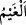
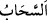
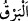
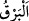

birer melek bulunur. İbn Abbas (r.a.): “Yeryüzünde akan (pınar, dere, ırmak) bütün
suların aslı dolu ve kardır.”
Denilir ki Allah Teâlâ bedenlerinin yarısı kardan yarısı da ateşten oluşan melekler
yaratmıştır. Fakat ne kar ateşi söndürür, ne de ateş karı eritir. Allah bir bölgeye kar
yağdırmak istediğinde o meleklere emreder. Melekler kardan olan kanatlarını
çırptıklarında bunlardan düşen şeyler, o bölgeye kar olarak yağar.
Âyette geçen “gök”ten maksadın felekler olduğu da söylenmiştir. Yeryüzünde taştan
dağlar olduğu gibi orada da buzdan dağlar vardır. Akıl da bunu reddetmez. Meşhur olan
görüşe göre ise göğe doğru yükselen ve sıcaklık tarafından çözülmeyen buharlar havada
soğuk tabakaya ulaşınca burada kuvvetli soğuğun tesiriyle toplanıp bulut hâline gelirler.
Soğuk şiddetli olmazsa bu bulutlar yağmur yağdırır. Eğer soğuk şiddetli olur da buhar
hâlindeki parçalara henüz bir araya toplanmadan önce ulaşırsa dolu olarak yağar. Bazen
hava aşırı soğuk olur da bulutları sıkıştırıp soğutursa, bunlardan da yağmur veya kar
yağar. Bütün bunlar, Allah Teâlâ’nın nice hikmet ve maslahatlara dayalı irâde ve
meşîetine bağlıdır.
İhvânu’s-safâ’da der ki: “Su ve toprağa âid küçük parçacıklar havada çoğalıp bir
araya geldiklerinde bunun ince hâline “
”, yoğun hâline ise “
” denilir. Yağmur
ise bu su parçacıklarının bir araya gelen, soğuyup ağırlaşarak yeryüzüne dönmüş
şeklidir. Dolu, buluttan çıktıktan sonra havada donan parçalardır. Kar ise ince bulutun
arasında donan sonra yoğun buluttan yumuşak bir tarzda inen küçük parçalardır.”
Yere âid çok ince parçacıklar “duman”, suya âid çok ince parçacıklar da “buhâr” diye
isimlendirilir.
İbnü’t-Temcîd der ki: “Güneş kuru bir yer üzerine doğunca oradan ateşe âid küçük
parçacıklar kalkar ve bunlara yere âid küçük parçacıklar karışır. İşte bu ikisinin
karışımından oluşan maddeye “duman” denir.
Şerhu’l-Kânûn’da ise şöyle der: Duhân/duman ile buhar arasındaki bir fark, duman
yere ve ateşe âid parçacıklardan, buhar ise suya ve havaya âid parçacıklardan oluşur.
Dolayısıyla buhar dumandan daha incedir.
“Artık onu” indirdiği doluyu “dilediğine isâbet ettirir;” böylece o kimsenin canına,
ekin, hayvan ve meyve gibi mallarına ulaşacak zarar ulaşır “dilediğinden de onu uzak
tutar” o gâileden emin olur.
Bu bulutların “şimşeğinin parıltısı” aşırı aydınlatmasından ve hızlı gelmesinden
dolayı “neredeyse gözleri alır!” “
” kelimesi elif-i maksûre ile parlak ışık, elif-i
memdûde ile ise yükseklik, yücelik anlamandadır. “
” ise bulutun parıldamasıdır. el-
Kâmûs’ta der ki: “
(şimşek)” bulutun parıltılarından bir parıltı veya meleğin
sürüklenmesi için buluta vurması ve hareket ettirmesi, bundan dolayı çıkan ateşi de
senin görmendir.”
İhvânu’s-safâ’da der ki: “Şimşek, bulutun içindeki duman parçalarının birbirleriyle
çarpışmasından meydana gelen ateştir.”